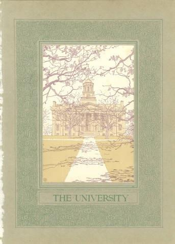
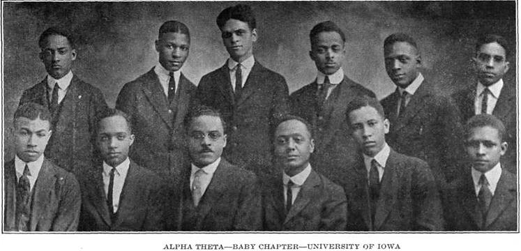
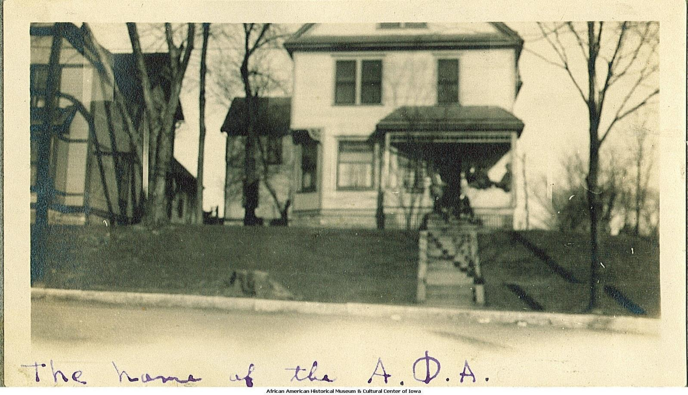
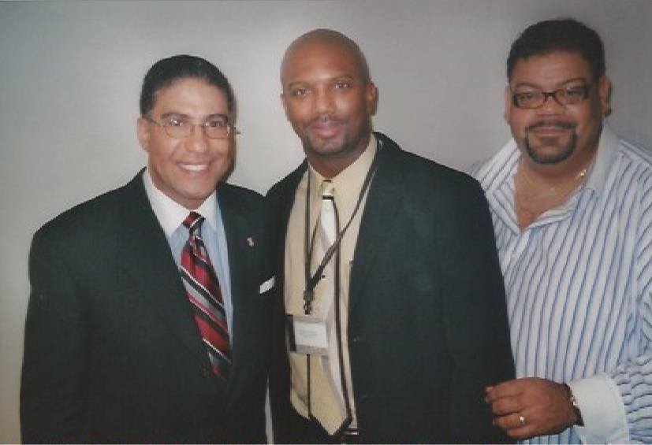

Chapter History
The history of the 30th house of Alpha Phi Alpha Fraternity, Inc. — the first chapter of the Fraternity in the state of Iowa.
The founding of Alpha Theta
In December 1921, Rhoderic Harold Harris discussed with Robert Hale Graham the advisability and opportunity of establishing a chapter of Alpha Phi Alpha at the State University of Iowa. The two organized the Penndennis Club, with Brother Harris as President, and made application to the Fraternity at its 14th Annual Convention, in session in Baltimore, Maryland. Permission was given, and Brother William Jenifer Powell of the University of Illinois, Tau Chapter, was sent to set the chapter up.
The Fraternity granted the charter even though the local group had not been on campus for the required two-year period. As the Daily Iowan reported on February 22, 1922:
“Because of the unsatisfactory and almost intolerable living conditions which apply to colored students it was decided to waive this rule and grant their petition.”
The Daily Iowan, February 22, 1922
On March 11, 1922, twelve men stood together and claimed their places as pioneers — the charter members of the Alpha Theta Chapter of Alpha Phi Alpha Fraternity, Inc., seated at the University of Iowa and the 30th chapter established in the Fraternity. They hailed from across the country, including Texas, Louisiana, Oklahoma, New York, Missouri, and Iowa. Drawn to the University of Iowa for its academic reputation, they came to desire something more: a community that would link them to like-minded peers who held similar values, goals and desires, and who faced similar struggles.

The twelve charter members

-
Rhoderic Harold Harris
Considered the Father of the Chapter because it was his initial idea to set up an Alpha chapter at the State University of Iowa. He served as the chapter’s first President and as secretary in 1923. After receiving his B.A. in Liberal Arts in 1923 he entered the College of Dentistry, and worked for many years as a dentist in Keokuk, Iowa.
-
Robert Hale Graham
Born in Arcadia, Oklahoma, he came to the State University of Iowa in 1921. With Brother Harris he established the Penndennis Club and submitted the application to the Fraternity. He completed his degree in the College of Pharmacy at the University of Illinois Chicago on June 9, 1923.
-
Clifford Vaughan Smith
Born in Kansas City, Missouri, he studied Engineering and served as the chapter’s delegate to the Fifteenth Annual Convention in St. Louis. He later supervised construction for the A.A. Taylor Construction Company of Des Moines and became resident engineer director of the Washington, D.C. Department of Highways and Traffic Bridge Division.
-
Joseph Adolph Blaine Dejoie
Born August 15, 1901 in New Orleans, Louisiana, and nicknamed “Frenchy.” He served as Sergeant-At-Arms, Historian, Steward, Editor to the Sphinx, and chapter President, graduated from the College of Pharmacy in 1926, and returned to New Orleans as a pharmacist in the family practice.
-
Byron J. McDaniel
Born in Kansas City, Missouri on August 12, 1902, and known as “Papa Mac.” He served as Vice-President, sat on the chapter’s very first Go-To-High-School, Go-To-College committee in 1923, and studied in the College of Pharmacy.
-
Irving Victor Muse
Born in Columbia, Missouri on September 28, 1899. He served as Historian and Sergeant-At-Arms, chaired the chapter’s first Go-To-High-School, Go-To-College Committee in 1923, served as Acting President, and graduated from the College of Pharmacy on June 5, 1923.
-
Russell James Holmes
Born in Kansas City, Kansas, he graduated from the College of Pharmacy in 1924. He served as the chapter’s first Corresponding Secretary, Editor to the Sphinx Magazine, and Chaplain.
-
Creola Leonard Morris
Born in Albia, Iowa, where he attended Albia High School. He sat on the chapter’s very first Go-To-High-School, Go-To-College committee with Brother Byron J. McDaniel in 1923.
-
Marion Claude Colvin, Jr
Born March 1, 1898 in Paris, Texas. He received his Bachelor of Arts degree from the State University of Iowa in the spring of 1923 and later returned to his hometown in Texas.
-
Joel Prophet Holman
Born in Pine Bluff, Arkansas. He attended the State University of Iowa and later transferred to Coe College in Cedar Rapids, Iowa, where he was involved in the Cosmopolitan Club and played baseball.
-
William Bridges Lawes
Lived in Davenport, Iowa and was a student at the State University of Iowa in 1922. In the 1940s he was listed in the Sphinx Magazine Directory as residing in Cincinnati, Ohio.
-
Clarence C. Coles
Served as the chapter’s very first Sergeant-At-Arms. His time in Alpha was cut short when he passed away in December 1922 following a car accident on December 17, 1922.
A century of Alpha at Iowa
-
Dec. 4, 1906
The Fraternity is founded
Alpha Phi Alpha Fraternity, Inc. is founded at Cornell University in Ithaca, New York.
-
Dec. 1921
The Penndennis Club
Rhoderic Harold Harris and Robert Hale Graham create the Penndennis Club, with Harris as president, and submit a letter to the Fraternity at its 14th Annual General Convention in Baltimore, Maryland.
-
Spring 1922
Help from Tau Chapter
Brother William Jenifer Powell of Tau Chapter is sent by the Fraternity to set up a chapter at the State University of Iowa.
-
Mar. 11, 1922
Alpha Theta is chartered
Twelve students at the State University of Iowa establish the Alpha Theta Chapter — the 30th chapter of the Fraternity.
-
Mar. 10, 1923
The first initiates
Brothers Russell Caldwell Ragland and William J. McCord become the first initiates of the chapter beyond the charter members.
-
1923
Go-To-High-School, Go-To-College
The chapter seats its very first Go-To-High-School, Go-To-College committee, chaired by Brother Irving Victor Muse.
-
June 1924
“Why I Wish to Become an Alpha”
Brother William Henry Harding’s letter requesting membership is published in the Sphinx Magazine as “Alpha Phi Alpha Seen From Without: Why I Wish to Become an Alpha.”
-
Summer 1924
A chapter house
Alpha Theta purchases its first home, “located two blocks from the University campus… A castle, with three stories and a basement,” housing twelve brothers and ten pledges.
-
Nov. 1925
Visiting Mu Chapter
The chapter travels to visit the brothers of Mu Chapter in Minneapolis to see Iowa play Minnesota.
-
Jan. 1931
“Get Financial” campaign
Alpha Theta reminds brothers, especially its alumni, of the importance of remaining active and financial in the Fraternity.
-
Nov. 1931
The charity classic
Alpha Theta and the Gamma Chapter of Kappa Alpha Psi Fraternity, Inc. renew their annual charity football game before about five hundred spectators, raising a collective $250 for the unemployed. Alpha Theta lost a thrilling game, 7 to 6.
-
Mar. 1932
Hosting Langston Hughes
The brothers host the poet, activist, playwright and Harlem Renaissance leader Langston Hughes during his visit to the University of Iowa.
-
May 1932
Ten years
The chapter celebrates its 10th year. Charter members Rhoderic Harold Harris, Clifford Vaughn Smith and Byron McDaniel attend and give remarks.
-
Summer 1940
Without a home
After maintaining a chapter house for 16 years, the brothers report in the Sphinx Magazine that they are without a home.
-
1950s–2007
Inactive and reactivated
The chapter is inactive in the 1950s–1960s, reactivated from the 1970s into the 2000s, and inactive again until 2007.
-
Nov. 15, 2008
Alpha Theta is re-chartered
Through the efforts of Brother Eric D. Thigpen ’02, the chapter returns to the University of Iowa. Re-charter members: Brothers Ryshawn Peer, Vernon Jackson and Kevin Pinkston — the S.S. ADEWALE, “The Crown Has Come Home.”
-
2019
The history is published
Brother Anthony Ferguson, Jr (Alpha Theta ’11) publishes the District of Iowa: History Book, Volume 1, after eight years of research into the chapter’s founders.

A home in Iowa City
For sixteen years, from 1924 until 1940, Alpha Theta maintained a chapter house near campus. The Sphinx Magazine described the first home as “a castle, with three stories and a basement.”
Alpha Theta is re-chartered
After years in which required paperwork for newly initiated members was not submitted to the General Office, Alpha Theta was de-chartered. Under the policy of the time, a chapter that had been de-chartered would have to file for a new charter, with a new key number and new letters.
Brother Eric D. Thigpen refused to let Alpha Theta die. A University of Iowa student-athlete from 1994 to 1998, he was initiated into Gamma Xi Lambda in Minnesota in the spring of 2002. Returning to Iowa, he led the re-chartering of Nu Chi Lambda Chapter in Iowa City in 2003, then turned his attention to reviving Alpha Theta.
Working with the University of Iowa’s office of student life, he secured forgiveness of an outstanding debt and a letter of support for the Fraternity’s return to campus. With letters from District Director of Iowa Donald Butler and District Director of Illinois Chad D. Simmons (Alpha Theta, spring 1990), he won the support of Midwestern Regional Vice President Darryl A. Peal and, at a meeting in Atlanta, of 32nd General President-Elect Darryl R. Matthews, Sr.
On November 15, 2008, Brothers Ryshawn Peer, Vernon Jackson and Kevin Pinkston became the re-charter members of Alpha Theta. Their ship name is S.S. ADEWALE, which means “The Crown Has Come Home.” Brother Thigpen is fully recognized as a 2002 initiate of Alpha Theta Chapter. Because of him, the history of Alpha Theta — the mother chapter of Alpha Phi Alpha Fraternity, Inc. in the state of Iowa — continues.

Notable brothers
Rhoderic Harold Harris ’22
Creator of the Penndennis Club, which facilitated the establishment of the chapter in 1922; later a dentist in Keokuk, Iowa.
Orthel T. Roberts ’23
First Principal of Kinloch High School in Kinloch, Missouri.
James Dallas Park ’26
Art Editor of the Sphinx Magazine for over 12 years; head of the Art Department at Lincoln University in Jefferson City, Missouri; track coach; and founder of the Missouri State Negro Inter-Scholastic Athletic Association.
Louis B. White ’27
First Black Phi Beta Kappa Key Scholar at the University of Iowa in the 20th century, and the only Black soccer player in the Big Ten Conference in 1927 and 1928.
Lafayette James Twyner, Sr (circa 1930s)
First African American elected to the Davenport, Iowa School Board, and its first African American board President.
Bernard Goss ’31
Co-founder, with his wife Margaret Burroughs, of the Southside Community Art Center — the only surviving Works Progress Administration (WPA) art center today, and a meeting place for Black Chicago Renaissance artists.
James E. Peeples ’34
Longtime civil rights activist and inductee of the Peoria African-American Hall of Fame; recognized as Alpha Phi Alpha’s Man of the Year in 2000.
Ozzie E. Simmons ’34
One of the first Black All-American college football players of the 1930s, responsible for the creation of the Floyd of Rosedale Trophy between the University of Iowa and the University of Minnesota.
Bennie D. Brown ’34
First full-time General Secretary of Alpha Phi Alpha Fraternity, Inc.
Inman Lawrence Perkins ’34
Sergeant of a Colored Battalion in World War II and teacher at Sumner High School in St. Louis, Missouri.
Clifton R. Jones (circa 1930s)
First Black student to receive a Doctorate in Sociology from the University of Iowa. Initiated into Gamma Chapter at Virginia Union; later transferred to Alpha Theta.
Richard “Dick” Culbertson (circa 1940s)
First African American basketball player in the Big Ten Conference, on the 1944 University of Iowa team.
Landry E. Burgess ’43
First faculty member at Meharry Medical College in Nashville, Tennessee to hold a PhD in Zoology.
Chad D. Simmons ’90
Former District Director of Illinois.
Justin J. Roberson ’13
62nd Midwestern Regional Vice President of Alpha Phi Alpha Fraternity, Inc.
Chapter presidents
As recorded in the history book. Years not listed are not documented in the book.
| Year | President |
|---|---|
| 1922 | Rhoderic H. Harris |
| 1923 | Clifford V. Smith |
| 1924 | Rhoderic Harris |
| 1925 | Joseph Adolph Blaine Dejoie |
| 1926 | Henry Harding |
| 1927 | Ralph Moody |
| 1928 | James E. Taylor |
| 1930 | Bennie E. Taylor |
| 1931–1933 | Roscoe L. Barrett |
| 1934–1935 | Bernard Goss |
| 1936 | Gerald R. Boyd |
| 1937–1938 | James Peeples |
| 1939 | Julian Mason |
| 1940–1942 | James Peeples |
| 1943–1945 | George S. Meadows, Jr |
| 1946 | H. I. Fontellio-Nanton |
| 1947 | Eldridge Leonard |
| 1948 | Richard T. Culberson |
| 1949 | Russell A. Brown |
| 1950 | George R. Ricks |
| 1951–1952 | N/A |
| 1953 | Russell A. Brown |
| 1981 | Melvin Caldwell |
| 1982–1983 | Michael Marsh |
| 1986 | Tyrone Walls |
| 1987 | Rodney Kyles |
| 1988 | Michael Wilson |
| 1989 | Terrance Watts |
| 1990 | Patrick Glenn |
| 1991 | Paris Lewis |
| 1992 | David Maxwell |
| 1993 | Patrick Dyson |
| 1994 | Ronald Hill |
| 1995 | James McCurtis |
| 1996–1997 | Mike Sterling |
| 1998 | Kevin Burke |
| 2011–2013 | Anthony Ferguson, Jr |
| 2014 | Justin Roberson |
| 2015–2016 | Shawn Boursiquot |
| 2016–2017 | Timothy Shields |
| 2017–2018 | Fredrick Cherry |
| 2018–present | To be added |
About this history
This page is drawn from the District of Iowa: History Book, Volume 1 (2019), compiled by Brother Anthony Ferguson, Jr (Alpha Theta ’11), which collects firsthand accounts from the Sphinx Magazine, the Daily Iowan, and the University of Iowa yearbook. In the words of its author, it is not a completed collection — brothers with documents, photographs or corrections are encouraged to share them with the chapter.